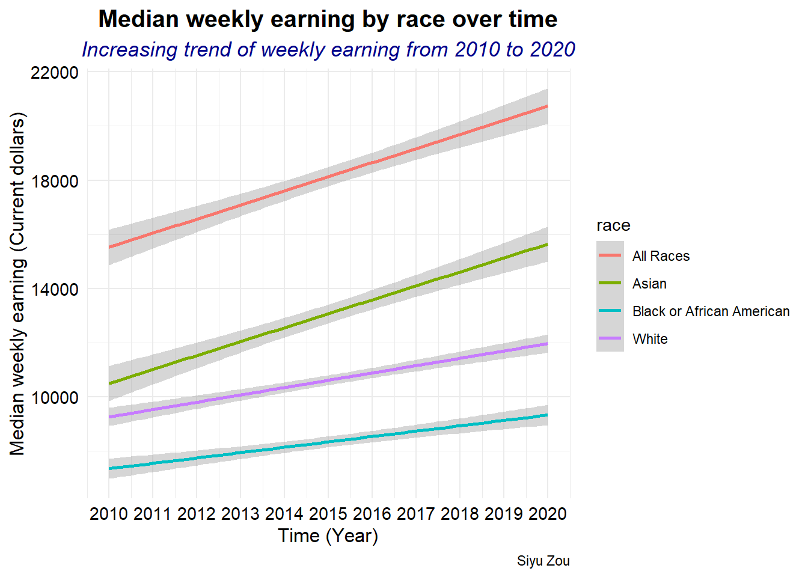
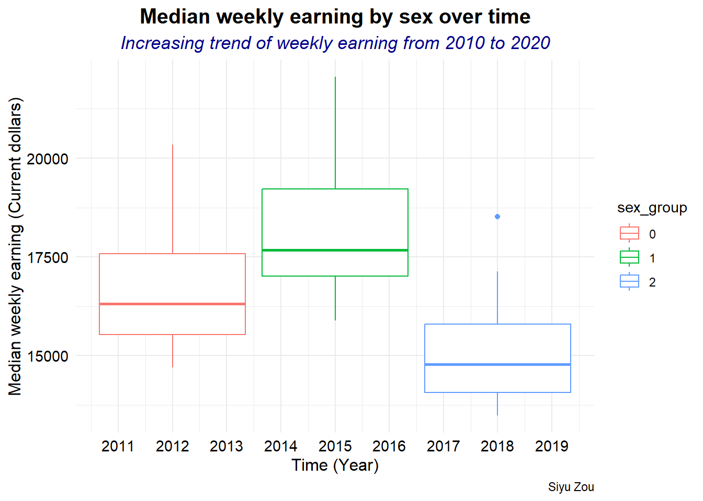
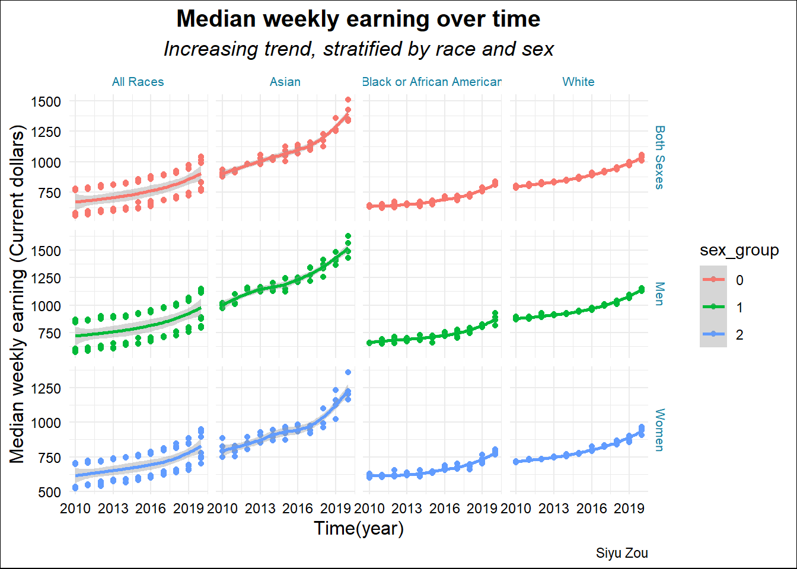
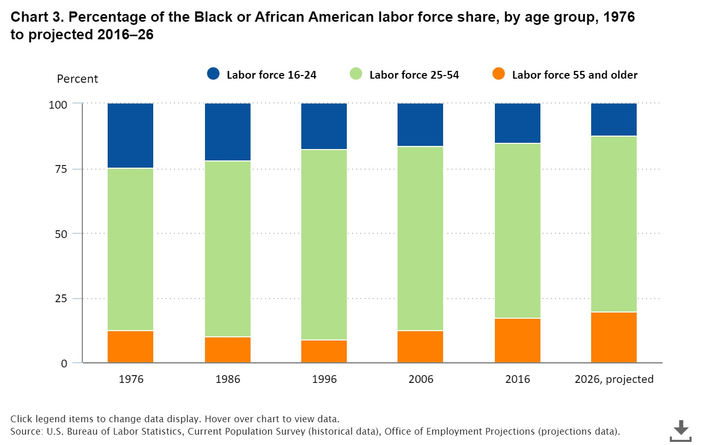

library("tidytuesdayR")
library("here")
library("tidyverse")
# library("lubridate")Example analysis
Question
Based on the U.S. BUREAU OF LABOR STATISTICS (“CPS Tables : U.s. Bureau of Labor Statistics” n.d.): Which race and sex group earn the most of money every week? What’s the trend of the earning over the last 10 years?
Audience
People who are interested in the labor force and weekly median earnings by race/gender/age group over time in America.(“Technical Documentation (CPS) : U.s. Bureau of Labor Statistics” n.d.)
Original data
Data comes from TidyTuesday, which is a weekly podcast and global community activity brought to you by the R4DS Online Learning Community. Archive of datasets from the 2021 series of TidyTuesday events
In this project, one datasets comes from TidyTuesday would be used. Specifically, we will use the following data from February 23th 2021. To access the data, you need to install the tidytuesdayR R package and use the function tt_load() with the date of ‘2021-02-23’ to load the data.
# tuesdata <- tidytuesdayR::tt_load("2021-02-23")
# employed <- tuesdata$employed
# tests if a directory named "data" exists locally
if (!dir.exists(here("data"))) {
dir.create(here("data"))
}
# saves data only once (not each time you knit a R Markdown)
if (!file.exists(here("data", "employed.RDS"))) {
url_csv <- "https://raw.githubusercontent.com/rfordatascience/tidytuesday/master/data/2021/2021-02-23/employed.csv"
employed <- readr::read_csv(url_csv)
# save the file to RDS objects
saveRDS(employed, file = here("data", "employed.RDS"))
}
employed <- readRDS(here("data", "employed.RDS"))
earn <- readr::read_csv('https://raw.githubusercontent.com/rfordatascience/tidytuesday/master/data/2021/2021-02-23/earn.csv')Rows: 4224 Columns: 8
── Column specification ────────────────────────────────────────────────────────
Delimiter: ","
chr (4): sex, race, ethnic_origin, age
dbl (4): year, quarter, n_persons, median_weekly_earn
ℹ Use `spec()` to retrieve the full column specification for this data.
ℹ Specify the column types or set `show_col_types = FALSE` to quiet this message.as_tibble(employed)# A tibble: 8,184 × 7
industry major_occupat…¹ minor…² race_…³ indus…⁴ emplo…⁵ year
<chr> <chr> <chr> <chr> <dbl> <dbl> <dbl>
1 Agriculture and related Management, pr… Manage… TOTAL 2349000 961000 2020
2 Agriculture and related Management, pr… Profes… TOTAL 2349000 58000 2020
3 Agriculture and related Service occupa… Protec… TOTAL 2349000 13000 2020
4 Agriculture and related Service occupa… Servic… TOTAL 2349000 94000 2020
5 Agriculture and related Sales and offi… Sales … TOTAL 2349000 12000 2020
6 Agriculture and related Sales and offi… Office… TOTAL 2349000 96000 2020
7 Agriculture and related Natural resour… Farmin… TOTAL 2349000 931000 2020
8 Agriculture and related Natural resour… Constr… TOTAL 2349000 10000 2020
9 Agriculture and related Natural resour… Instal… TOTAL 2349000 33000 2020
10 Agriculture and related Production, tr… Produc… TOTAL 2349000 42000 2020
# … with 8,174 more rows, and abbreviated variable names ¹major_occupation,
# ²minor_occupation, ³race_gender, ⁴industry_total, ⁵employ_nif (!file.exists(here("data", "tuesdata_employed_status.RDS"))) {
tuesdata <- tidytuesdayR::tt_load("2021-02-23")
earn <- tuesdata$earn
employed <- tuesdata$employed
# save the files to RDS objects
saveRDS(tuesdata$earn, file = here("data", "tuesdata_earn.RDS"))
saveRDS(tuesdata$employed, file = here("data", "tuesdata_employed.RDS"))
}--- Compiling #TidyTuesday Information for 2021-02-23 ------- There are 2 files available ------ Starting Download ---
Downloading file 1 of 2: `earn.csv`
Downloading file 2 of 2: `employed.csv`--- Download complete ---earn <- readRDS(here("data", "tuesdata_earn.RDS"))
employed <- readRDS(here("data", "tuesdata_employed.RDS"))data dictionary
Here is a data dictionary for what all the column names mean: data dictionary
data wrangling
Note
Note that this data weangling used 5 functions from dplyr, including: select, mutate,filter,summarise,arrange
glimpse(earn)Rows: 4,224
Columns: 8
$ sex <chr> "Both Sexes", "Both Sexes", "Both Sexes", "Both Sex…
$ race <chr> "All Races", "All Races", "All Races", "All Races",…
$ ethnic_origin <chr> "All Origins", "All Origins", "All Origins", "All O…
$ age <chr> "16 years and over", "16 years and over", "16 years…
$ year <dbl> 2010, 2010, 2010, 2010, 2011, 2011, 2011, 2011, 201…
$ quarter <dbl> 1, 2, 3, 4, 1, 2, 3, 4, 1, 2, 3, 4, 1, 2, 3, 4, 1, …
$ n_persons <dbl> 96821000, 99798000, 101385000, 100120000, 98329000,…
$ median_weekly_earn <dbl> 754, 740, 740, 752, 755, 753, 753, 764, 769, 771, 7…earn_clean <- earn %>%
select(sex, race, age, year, median_weekly_earn) %>%
mutate(
age_group = case_when( age == "16 to 24 years" ~ 1 ,
age == "25 to 54 years" ~ 2 ,
age == "55 years and over" ~ 3 ,
),
sex_group = factor(sex, levels = c("Both Sexes", "Men", "Women") , labels = c(0, 1, 2))
) %>%
filter(age_group == 2 ) %>%
mutate(Race_group = factor(race, levels = c("All Races", "Asian", "Black or African American","White") , labels = c(0, 1, 2, 3) ))
adults_earn_race <- earn_clean %>%
group_by( race, year) %>%
summarise(
year_earn = sum(median_weekly_earn)
) %>%
arrange(year, .by_group = TRUE)
adults_earn_sex <- earn_clean %>%
group_by( sex_group, year) %>%
summarise(
year_earn = sum(median_weekly_earn)
) %>%
arrange(desc(year), .by_group = TRUE)
three plots
There are three plots to show the median weekly earning over time, stratified by race and sex.
adults_earn_race %>%
ggplot( aes(year, year_earn, color = race)) +
geom_smooth(stat = "smooth", position = "identity", method = "lm") +
labs(
title = "Median weekly earning by race over time",
subtitle = "Increasing trend of weekly earning from 2010 to 2020",
caption = "Siyu Zou",
y = "Median weekly earning (Current dollars)",
x = "Time (Year)"
) +
scale_x_continuous(breaks = seq(2010, 2020, 1), labels = seq(2010, 2020, 1) ) +
theme_minimal() +
theme(
plot.title = element_text(hjust = 0.5, face = "bold", size = 15),
plot.subtitle = element_text(hjust = 0.5, color = "darkblue", face = "italic", size = 13),
axis.title = element_text(color = "black", size = 12),
axis.text = element_text(color = "black", size = 11)
)`geom_smooth()` using formula = 'y ~ x'
adults_earn_sex %>%
ggplot( aes(year, year_earn, color = sex_group)) +
geom_boxplot(stat = "boxplot", position = "dodge2" ) +
labs(
title = "Median weekly earning by sex over time",
subtitle = "Increasing trend of weekly earning from 2010 to 2020",
caption = "Siyu Zou",
y = "Median weekly earning (Current dollars)",
x = "Time (Year)"
) +
scale_x_continuous(breaks = seq(2010, 2020, 1), labels = seq(2010, 2020, 1) ) +
theme_minimal() +
theme(
plot.title = element_text(hjust = 0.5, face = "bold", size = 15),
plot.subtitle = element_text(hjust = 0.5, color = "darkblue", face = "italic", size = 13),
axis.title = element_text(color = "black", size = 12),
axis.text = element_text(color = "black", size = 11)
)
earn_clean %>%
ggplot(aes(year, median_weekly_earn, color = sex_group)) +
geom_point( ) +
geom_smooth(method = 'loess') +
facet_grid( sex ~ race , scales = "free") +
labs(
title = "Median weekly earning over time",
subtitle = "Increasing trend, stratified by race and sex",
x = "Time(year)",
y = "Median weekly earning (Current dollars)",
caption = "Siyu Zou"
) +
scale_x_continuous(breaks = seq(2010, 2020, 3), labels = seq(2010, 2020, 3) ) +
theme_minimal() +
theme(
strip.text = element_text(color = "#1380A1" , size = 8),
strip.background = element_rect(fill = "white", color = "white", linewidth = 1 ),
plot.title = element_text(hjust = 0.5, color = "black", face = "bold", size = 15) ,
plot.subtitle = element_text(hjust = 0.5, color = "black", face = "italic", size = 13) ,
plot.background = element_rect(fill = "white" ),
# panel.grid.major = element_line(color = "white", linewidth = 0.5),
# panel.grid.minor = element_line(color = "white"),
axis.title = element_text(color = "black",size = 12),
axis.text = element_text(color = "black", size = 9)
)`geom_smooth()` using formula = 'y ~ x'
Include one image or table (not one you created yourself, but one you have saved locally or one from the web)
A image from the U.S. Bureau of Labor Statistics (BLS)
Provided an overview of Blacks in the labor force from 1976 to projected 2016-26. Aging labor force, lower participation rates (Toossi n.d.)

The Black share of the labor force by age group continues to shift. The labor force share of Blacks ages 55 and older was larger in 2016, and is projected to be larger in 2026, than that of the 16- to 24-year-old group.
Summarize
Which race and sex group earn the most of money every week? Based on the U.S. Bureau of Labor Statistics (BLS) projects, in the past 10 years, all race groups’ weekly earning were increasing. Specially, Asian had the highest median weekly earning from 2010 to 2020. Black or African American had the lowest median weekly earning from 2010 to 2020. Compared to women, men had higher median weekly earning. In total, Asian men had the highest median weekly earning, Black or African American women had the lowest median weekly earning over the 10 years.
list out functions
dplyr: mutate, select, filter, summarise, arrange ggplot2: geom_smooth, geom_boxplot, geom_point
References
Toossi, Emily Rolen {and} Mitra. n.d. “Blacks in the Labor Force : Career Outlook: U.s. Bureau of Labor Statistics.” Accessed October 31, 2023. https://www.bls.gov/careeroutlook/2018/article/blacks-in-the-labor-force.htm.